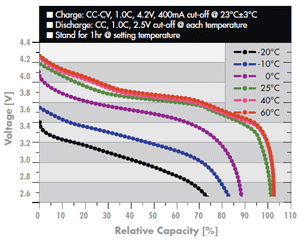

Hi.
I power my emonTX with a 5V adapter. I'd like to power it with batteries to let it run outside the house.
It worked with two 1.5V batteries, but I'd rather use rechargeable batteries.
My accumulators are NiMH (1.2 V). When using these, the ATMega does not seem to run. It is said to run at (Operating Voltage: 1,8V - 5.5V) but I guess the rest of the board needs power as well.
NiZn are apparently more expensive but should work : 1.6 V.
What kind of battery do you guys use to power your TX ?
Re: Battery powered emonTX
What about a LiPo which is 3.7-4.2V. I ordered a few of these to do some tests: http://hobbyking.com/hobbyking/store/uh_viewItem.asp?idProduct=20386
Re: Battery powered emonTX
I run my glcd from a 3.7v lipo pack with great success. So can't see why this would not work.
just make sure you charge them correctly.
Re: Battery powered emonTX
I run my glcd from a 3.7v lipo pack with great success.
How long does it last between charges?
P.
Re: Battery powered emonTX
Over a week between charges and even more if I connect a solar cell to the lipo charger on board. I should be able to get more but have not optimised the code at all.
Will take some pics.
Re: Battery powered emonTX
I'm also interested in what LiPo you use, which charger etc :-).
Re: Battery powered emonTX
I'm interested in references as well.
Does it fit nice inside the TX case ?
(BTW, the case is provided with metal contacts for the batteries but only at the battery/wire interface. I had to stuff some sort of tin foil on the over end to connect the two batteries together.)
Re: Battery powered emonTX
This is for the emonGLCD only.. My TX is powered by a usb charger as it monitors Voltage as well as current so has to be next to a power point any way..
The Charger is a lipo charger from https://www.adafruit.com/products/390
the battery is a 6000mah battery.. Iv also used a 2000 and 2700mah with great success.. 5days and 6days ish with some code changes.. Could get more but i was new at ardunio programming then.. Must revisit this. got side tracked because of the crashing issue and throught it was my bad code..
See thread for some pics (very early stages and lipo run time tests.
http://openenergymonitor.org/emon/node/541#comment-4430
All of my Jeenodes are also Lipo powered and run happly on this.. Will make a post about the other to save clogging up this one..
Pics attached.
Rob
Forgot to say the solar panel just connects to the lipo charger and is a cheep 1w 5v (ish) panel. Seems to do the job fine.
Re: Battery powered emonTX
Do you think it would be possible to reach several weeks/months autonomy ? What if you want to instrument a building for several weeks, even months, but you can't go there every three days to replace the batteries, or ask your client to do it ?
Some USB keys can record the temperature during two years (or so they say). They don't transmit anything, though. They are useful for the study of a building's behavior in time, but not for remote supervision.
Apart from instrumenting your own house, I don't see use cases where you can afford to replace the battery so often.
Re: Battery powered emonTX
I got a 3.7 V LiPo battery and a mini usb charger:
This should allow me to charge the battery in place, with the charger feeding both the battery and the emonTX, and the battery taking over when the system is taken off grid.
The output of the device is 4V. For those who didn't know it either, it only works with a battery plugged in, even if it is plugged to an energy source. In other words, the grid (through the USB adapter) fills the battery which in turns feeds the circuit.
I didn't dare connecting it to the battery input of the emonTX, the one that is labeled" max 3.3 V, so I did an ugly soldering to the mini USB input pins on the TX. I get 4 V instead of 5V, but it seems to work.
Is that the right way or should I use the battery input ? Or do it completely differently ?
Re: Battery powered emonTX
6000 mAh for less than a week?
Is the backlight of your display always on, the RF-Chip always in tranceiver mode and the Arduino running at full speed?
Re: Battery powered emonTX
I'm rephrasing in case my question went unnoticed.
Where on the TX would you plug a LiPo battery charger ?
The battery input is clearly labeled Max 3.3 V so the obvious answer might be not here.
So I decided to solder the wires to the USB alim socket, but that makes a bit of a dodgy connection. I could take a photo but I suppose you get the idea.
I didn't know if I could use the pinholes around the ATMega (JeePorts). Could I ?
I saw on the post "emonTx New Dev Ideas" that a LiPo charger might be added. I think it could be a good idea. This is what I want to check by testing the autonomy with mine.
Re: Battery powered emonTX
As a follow up, see this thread with another suggestion:
A step-up regulator can be used to provide a constant 3.3 V from AA batteries.
Re: Battery powered emonTX
In deciding where to connect an external supply, you must take account of the maximum voltage of the various components present in your configuration.
The most obvious limit is the RFM12B, at 3.8 V, followed by DS18B20 (if fitted) at 5.5 V, then the ATmega at 6.0 V, then the MCP1702 at 14.5 V but this might also have a maximum power limitation that will apply at a lower voltage.
Clearly, you cannot apply greater than 3.8 V to the 3.3 V battery connection without risking maloperation or damage to the RFM12B. If you use the nominal 5 V input (via the USB connector or indeed any point labelled PWR, then the upper limit is set by anything (possibly DS18B20 temperature sensors) connected to the PWR (nominally 5 V) rail or the regulator, whichever is the lower; and the lower limit is set by the drop-out voltage of the regulator, which could be as high as 4.275 V.
Re: Battery powered emonTX
Thanks you Robert for making that clear.
So if my understanding is correct, there is a regulator that cuts everything off when the input power goes under a given level. If that level is around 4V, then I'm in trouble, since the {LiPo battery + charge} provides 4 V.
Which means that my 4 V source is not fitted either for the "battery" 3.3 V input or for the 5 V input.
In practice it seems to work well. But maybe the drop-out voltage is a bit lower than what I get from my source. Except it may cut anytime if the source weakens a bit.
Re: Battery powered emonTX
"So if my understanding is correct, there is a regulator that cuts everything off when the input power goes under a given level."
NO! The regulator doesn't operate correctly (i.e. it won't regulate) if it hasn't got enough voltage across it. Typically, the output voltage will drop and will be subject to large changes due to load variations and supply variations.
Re: Battery powered emonTX
OK, now I'm lost. Sorry. I supposed I misunderstood this sentence:
Which regulator are you talking about. Is it something inside the TX or in the charger I'm referring to in this post ?
I realized afterwards that there is a regulator in the charger, that ensures a constant voltage (I think the voltage is hardcoded):
This specific part aside, what happens to the TX when supply voltage goes down ? At some point the ATMega stops working, but before that, it works with sensors potentially providing stupid values, and all ?
Re: Battery powered emonTX
I'm not surprised you're lost - it is a minefield!
The "5 V" supply to the emonTx goes to some peripherals - as selected by solderable links - and feeds a MCP1702 regulator that provides the 3.3 V to everything else on the board. It is that regulator that I am referring to. I misread the data sheet, I looked at the wrong line - the "dropout voltage" below which it will not regulate is 0.725 V maximum, typically 0.525 V, and no minimum is specified. So if the "5 V" supply drops below the maximum output voltage + 0.725 V (which ought to be 3.3 V + 0.725 V = 4.025 V), correct operation is not guaranteed. But "typically" it will work down to 3.825 V ( = 3.3 V + 0.525 V), which explains why yours works
Most parameters of the ATmega are specified down to 1.8 V. The emonTx will not operate correctly at that, the inputs will clip to start with - you could only measure mains voltage below 140 V. If you do want to run the ATmega below 3.3 V, then all the resistors that scale the inputs will need changing to deliver a lower voltage.
Re: Battery powered emonTX
Thank you, Robert.
So when using the battery input, you need to solder the links to as to use 3.3 V for peripherals, and ensure this voltage is sufficient for the sensors you use.
For instance, when using AA batteries, as proposed by John in that other thread, either choose the 3.3 V regulator and connect it to battery input, or if it is not enough for the sensors and more than 3.3 V is needed, pick the 5 V, and solder it to a PWR pin.
If this feature (the step-up regulator) is to be added to the next TX, the 5 V might be a safer choice, but perhaps does it mean more power loss, because the 5 V needs to go through the MCP1702.
The picture is much clearer now. I largely overlooked the electronics in the TX, as the code was enough to worry about. I shouldn't lean over that to much, it may become addictive...
Re: Battery powered emonTX
How will it work reliably when not charging? A Li-Po cell is nominally 3.7 V and 2.7 V when discharged. I know you shouldn't fully discharge the cell, but even so it seems the nominal cell voltage is below the specified range of the MCP1702.
Re: Battery powered emonTX
Well, here's a picture to make things clearer (click to enlarge):
Even when not charging, the battery is connected through the regulator of the charger (MCP73831T).
I reckon that because of the regulator, the fact that the LiPo keeps a relatively constant voltage is not relevant.
The capacity of the LiPo is not that great (850 mAh), but it fits inside the box, even with the charger. I can close the box when not charging.
Re: Battery powered emonTX
I've read the data sheet for the charger and see no mention of voltage regulation when not charging. So my understanding is that the output voltage will be the battery voltage when not charging i.e a nominal 3.7 V.
The voltage regulation referred to in the data sheet is part of the charging cycle. It goes through constant current charging and then continues with constant voltage charging.
So my point is that the battery voltage when not charging will quickly go below the specified range of the MCP1702.
Re: Battery powered emonTX
If you look very carefully, the temperature link is pre-made to 5 V with a thin track between the solderable pads, which can be cut if not required, and soldered to 3.3 V instead. The pulse/IRQ input needs to be soldered in each case.
If you don't have anything that requires 5 V ( temperature sensors on long leads?), a clean 3.3 V feed from an external step-up/step down switching regulator would be my choice, and leave out the MCP1702.
Re: Battery powered emonTX
Please consider me as a noob when it comes to electronics. I almost didn't read the datasheet (shame on me) but 4,2 V is what I measure even when not charging (unplugged from the grid).
Re: Battery powered emonTX
I think 4.2 V is typical for a fully charged Li-Po cell, but it drops fairly quickly. I don't know what cell you're using but here is a typical performance curve.

It would seem that around 30% depth of discharge the voltage might be close to or below the range of the MCP1702. That's only 255 mAh i.e. 30% x 850 mAh.
Re: Battery powered emonTX
I've been running a TX on LiPo for a few weeks now.
At some point, I begun missing a lot of data frames. I checked the voltage and it was still more than 4 V.
I think it might be due to the cold. It seems to operate better on daytime.
This would be a noticeable drawback to the LiPo.
I shall investigate the step-up regulator lead.
Alternatively, I could use 3 AA accumulators (but that does not fit in the case).
I also have a rectangular 8.4 V accumulator. I could solder the links to have everything go through the MCP1702, which accepts up to 13.2 V, and feed the sensors with 3.3 V, I suppose.
Re: Battery powered emonTX
A friend gave me a little explanation about the cold affecting the battery. Basically, the cold increases the Thevenin's resistance of the battery (a non-ideal voltage source can be seen as an ideal voltage source in series connection with a resistance).
Without load (without current), the measured voltage is normal, but when loaded (when the circuit asks for current, in my case when the RF module transmits), the current increases, and the resistance wastes voltage, therefore the voltage outside the battery is limited. To verify this, I'd need to measure the voltage just when the RF module is emitting.
Anyway.
I could try a 9V battery. I might have temperature issues, I don't know. I'm not sure I'll do that, but I think this is possible if plugged not to the battery input, but to any PWR line (see message submitted by Robert Wall on Wed, 26/06/2013 - 15:11.) provided the sensors are on the 3.3V line, not the 5V (this is not the default connection !). For any noobier than me here, this means soldering wires somewhere. The TX (at least for v1) is not sold so as to do this.
I like the idea of the step-up. Seems safer. Can be 3.3 V or 5 V. Perhaps if 5V is not needed, 3.3V will have better efficiency. I think I'll go for this. The examples I'm providing are 6€ breakout board with a few additional components but a naked step-up is much cheaper (around 1 or 2 €). Perhaps would that be a nice add to the TX (or perhaps is there already something similar on the new version).
Edit: Searching the internet to get the step-up regulator from a reseller in France, I found an equivalent product, the PowerPOD NCP1402 3V3, that is sold by Ciseco, in UK, who also produces the Open Kontrol Gateway.
Edit 2: An equivalent product, Polulu NCP1402, and another one, a bit different, the U1V11F3. The latter seems more featured and more powerful, but has a lower efficiency in the low current range which I think is ours.
Re: Battery powered emonTX
I just ordered the 5V step-up from Sparkfun. The maximal input voltage to it is 4V, but someone says the 4.2V of my LiPo won't hurt it. I should be able to use either AA batteries or the LiPo.
Re: Battery powered emonTX
Hi, i am powering my 2 emonTx's from a LiPo battery being charged by a solar panel, with Seeedstudio's LiPo Rider Pro as charger. The system works (see details here), but i get a very low efficiency (2 days on a 1600mAh cell), and i assume it is because the charger has a step-up to 5V which the emonTx's then regulate down to 3.3V.
I am considering to connect the LiPo directly to the emonTx's, but if i would use the onboard MCP1702 voltage regulator it will only work as long as the LiPo voltage is above 3.825 V ( = 3.3 V + 0.525 V) as Robert pointed out above. Without regulator the RFM12B might burn above 3.8V. And using a step-up to 5V, as in my current setup (LiPo Rider charger) seems to lead to very low efficiencies. Any suggestions?
As the emonTx seems to work very well with around 3V from AA batteries, i think a solution could be to replace the 3.3V voltage regulator to one of 3V, then the LiPo voltage can go down to 3 + 0.525 V before the regulator stops working; does that make sense?
Re: Battery powered emonTX
I would look at replacing the regulator in the emonTx (or bypassing it) and use a single buck-boost converter that is capable of accepting an input that ranges from the minimum voltage of your cell up to the maximum voltage on charge (plus a little for safety). Some claim 96% efficiency, which should be seriously better than the combination of a boost converter followed by a linear regulator.